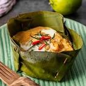

Home
Amok

Description
Amok (Amok Trey), a creamy, flavorful curry steamed in banana leaves.
Ingredients
- fresh fish
- coconut milk
- noni leaf
- a blend of fragrant spices
Steps
- Prepare a pot with boiling water
- If the fish is not already peeled, remove the skin and any bones.
-
Place the fish in a bowl and add the egg, coconut cream, fish sauce,
palm sugar, chili paste and the kroeung paste that you made in the first
step. Mix everything together well so that it is well combined.
-
Divide the mixture between the two banana leaf boats. Very finely slice
the lime leaf and some pieces of chili or pepper and scatter these over
the top of the mixture in the banana leaf boats for decoration.